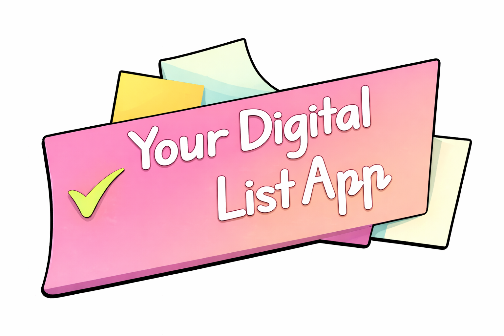

This project was developed as a way to practice and improve my skills in HTML, CSS, and JavaScript.
The main goal is to provide a functional task management system where users can create, edit, and delete lists and tasks, implementing a complete CRUD structure. To enhance the project, I also explored Firebase to handle data storage and user authentication.
The application features a custom visual style, with illustrations created by me using Paint Tool SAI, aiming to make the experience more unique and engaging.
Some additional features were considered during development, such as task notifications based on time, but were not implemented due to external service limitations.
Overall, this project represents both my technical learning process and my effort to build something functional, organized, and visually original.
Thank you for taking the time to check it out.
Sincerely,
Arthur Henrique